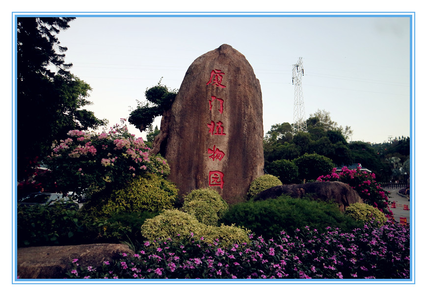

今天和常华去了南普陀，登上了山顶：
本计划，今天是和锦煌一块去观音山的，但是他有事情就延迟了，我打算今天去一个地方的，就说服了同事，一块去了南普陀，登上山顶，看那从未见过的风景。
来几张图片吧：
这是我们在登山的沿途中拍摄的一照片。
这是我们在登山的沿途中拍摄的另外一个角度的照片。
这是我们在山顶拍摄的照片。
在山顶休息了一会儿，就朝着另一个看起来很偏僻的方向下山了，然后峰回路转的就来到了厦门林区的植物园，最后到了厦门植物园的西门。

今天下午的小旅行就告一段落，回家吃饭。